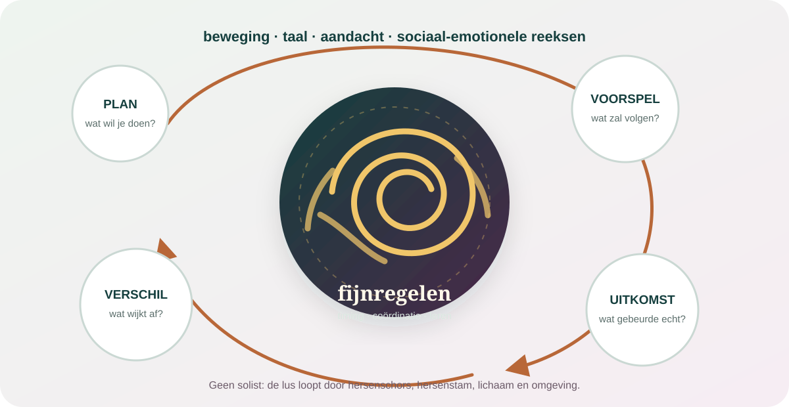

De kern in gewone taal
Het cerebellum voert niet simpelweg uit. Het stemt af.
Achteraan en onderaan je hersenen ligt een dichtgevouwen structuur die voortdurend informatie ontvangt over plannen, bewegingen, zintuigen en uitkomsten. Ze helpt verschillen opmerken tussen wat werd verwacht en wat werkelijk gebeurde. Daardoor kunnen handelingen vloeiender, sneller en beter getimed worden. Onderzoek laat bovendien zien dat delen van het cerebellum verbonden zijn met netwerken voor taal, aandacht, sociaal begrijpen en emotionele afstemming.
Balans is belangrijk, maar het cerebellum werkt mee aan veel vormen van timing, coördinatie en leren.
Het krijgt betekenis via lussen met hersenschors, hersenstam, ruggenmerg en andere hersengebieden.
Activiteit in het cerebellum betekent niet dat één gebied op zichzelf taal, liefde of persoonlijkheid produceert.
Klein van volume. Enorm dicht bevolkt.
Het cerebellum beslaat maar een bescheiden deel van het hersenvolume, maar bevat zeer veel zenuwcellen. Het oppervlak is in smalle plooien gevouwen. De buitenste cerebellaire schors verwerkt binnenkomende patronen; diepe kernen sturen veel uitgaande signalen verder. Via drie paren verbindingen — de cerebellaire pedunkels — staat het in druk verkeer met de rest van het zenuwstelsel.

Veel zenuwcellen is niet hetzelfde als meer bewustzijn: aantallen neuronen vertellen op zichzelf niet welke mentale functie een gebied heeft. Bouw, verbindingen en dynamiek zijn minstens zo belangrijk.
Je hoeft niet op iedere beweging te wachten om haar te corrigeren.
Als feedback pas arriveert nadat een beweging fout liep, ben je vaak te laat. Daarom gebruikt het zenuwstelsel interne modellen: verwachtingen over wat een commando waarschijnlijk zal veroorzaken en welke zintuiglijke gevolgen daarbij horen. Het cerebellum speelt een belangrijke rol in zulke snelle voorspellingen en in het aanpassen ervan wanneer uitkomst en verwachting verschillen.
Plan
Een netwerk zet een doel en een bewegingscommando klaar.
Voorspel
Een intern model schat in welke sensaties en uitkomst zullen volgen.
Vergelijk
Werkelijke feedback wijkt weinig of sterk af van wat werd verwacht.
Kalibreer
Volgende pogingen worden subtiel aangepast, vaak zonder bewuste regel.
Dat zie je wanneer een nieuwe bril, een zwaar voorwerp of een veranderde ondergrond eerst onwennig voelt en je systeem zich vervolgens aanpast. Niet al het leren werkt zo: beloning, bewuste strategie, gewoonte en motivatie steunen ook op andere circuits.
Het cerebellum herhaalt niet overal exact dezelfde taak.
Beeldvorming en onderzoek bij mensen met plaatselijke cerebellaire schade tonen een grove organisatie. Voorste en meer sensomotorische zones hangen sterker samen met beweging. Delen van de achterste lob zijn gekoppeld aan hersennetwerken voor taal, werkgeheugen, ruimtelijk denken, sociaal begrijpen en emotie. Moderne taakkaarten laten bovendien fijnere functionele grenzen zien die niet netjes samenvallen met de klassieke anatomische lobben.
Sensomotorisch
Lichaam en beweging
Houding, oogbewegingen, spraakmotoriek, kracht, richting en het soepel combineren van deelbewegingen.
Cognitief
Volgorde en afstemming
Taal, verwerkingssnelheid, plannen, werkgeheugen en ruimtelijke organisatie binnen verdeelde netwerken.
Sociaal-emotioneel
Patronen door de tijd
Een recente hypothese stelt dat de achterste delen reeksen in acties en sociale gebeurtenissen leren voorspellen.
Netwerk
Geen vakjeskast
Dezelfde taak gebruikt meerdere gebieden. Een hersenscan die oplicht is geen bewijs dat één stukje de ervaring bezit.
Misschien verfijnt het cerebellum niet alleen beweging, maar ook “beweging van denken”.
Jeremy Schmahmann gebruikte de term dysmetria of thought: zoals een armbeweging kan doorschieten of tekortkomen, kunnen ook tempo, volgorde en gepastheid van denken of emotie ontregeld raken wanneer bepaalde cerebellaire lussen beschadigd zijn. Dat is een invloedrijk raamwerk, geen bewezen universele berekening voor iedere functie.
Dat zou verklaren waarom een vergelijkbare circuitarchitectuur kan bijdragen aan zowel een vloeiende reikbeweging als een vloeiende zin — zonder te beweren dat beide hetzelfde zijn.
Een meta-analyse van 129 studies bij cerebellaire aandoeningen vond gemiddeld ook verschillen in verwerkingssnelheid, taal en sociale cognitie. De omvang en aard verschilden sterk per aandoening en plaats van schade; dit is geen lijst waarmee je jezelf kunt diagnosticeren.
Oefenen werkt niet doordat je eindeloos hetzelfde doet.
Foutgestuurd leren vraagt een verschil dat het systeem kan waarnemen en gebruiken. Een onverwachte afwijking kan een sterk leersignaal zijn; een onbetrouwbare of steeds wisselende omgeving maakt kalibratie moeilijker. Ook te grote fouten kunnen leiden tot een bewuste omweg in plaats van stille sensomotorische aanpassing.
“Mijn voorspelling zat ernaast.”
Het systeem past de relatie tussen commando en gevolg bij. Een deel daarvan gebeurt zonder dat je precies kunt uitleggen wat veranderde.
“Ik ga het bewust anders aanpakken.”
Je bedenkt een regel, richtpunt of plan. Dat kan snel helpen, maar is niet hetzelfde als een geautomatiseerd intern model.
Herstel is geen zuivere wilskracht: na hersenletsel hangen mogelijkheden af van plaats en omvang van schade, gezondheid, tijd, oefening, hulpmiddelen en professionele revalidatie. “Het brein is plastisch” is geen belofte dat alles terugkomt.
Wanneer afstemming wegvalt, kan een gewone handeling plots uit losse stukken bestaan.
Ataxie is een verzamelterm voor problemen met coördinatie. Mogelijke kenmerken zijn een onvaste gang, misstappen, trillend of doorschietend reiken, onduidelijke spraak, slikproblemen en afwijkende oogbewegingen. Niet iedere duizeligheid of onhandigheid komt uit het cerebellum; evenwicht gebruikt ook het binnenoor, zicht, gevoel uit spieren en gewrichten, hersenstam en andere systemen.
Nieuw verlies van evenwicht of coördinatie, moeite met lopen, dubbelzien, scheve mond, armzwakte of onduidelijke spraak kan bij een beroerte passen. Bel onmiddellijk 112, ook als het weer wegtrekt.
Onverklaarde problemen met lopen, spreken, slikken, zien of fijne motoriek horen medisch beoordeeld te worden. Medicatie, alcohol, tekorten, erfelijke aandoeningen en schade elders kunnen vergelijkbare klachten geven.
Vier sprongen die het bewijs niet draagt.
“Het cerebellum is alleen voor balans.”
Te klein. Balans en motoriek zijn kernfuncties, maar cognitieve en affectieve lussen zijn overtuigend aangetoond.
“Dus emotie zit in het cerebellum.”
Te groot. Emotie ontstaat uit lichaams- en hersennetwerken. Het cerebellum kan processen moduleren zonder eigenaar van de emotie te zijn.
“Coördinatieoefeningen genezen psychische klachten.”
Niet aangetoond als algemene regel. Een mechanisme of hersenverbinding is nog geen bewezen behandeling.
“Iedere onhandigheid is neurologisch.”
Nee. Vermoeidheid, stress, aandacht, middelen en gewone variatie beïnvloeden prestaties. Diagnose vraagt context en onderzoek.
Zes stemmen die het “kleine brein” groter maakten.
Jeremy Schmahmann
Kan denken ook uit maat raken?
Verbond klinische schade aan veranderingen in executieve functies, taal, ruimtelijk denken en affect.
Catherine Stoodley
Welke plek verstoort welke lus?
Gebruikt beeldvorming en laesieonderzoek om motorische en cognitieve topografie te onderscheiden.
Jörn Diedrichsen
Hoe fijn is de functionele kaart?
Bouwt taakkaarten die tonen dat klassieke anatomische grenzen niet gelijkstaan aan functionele grenzen.
Richard Ivry
Hoe wordt tijd een vloeiende handeling?
Onderzoekt timing, voorspelling en sensomotorische aanpassing zonder leren tot één systeem te reduceren.
Jennifer Raymond
Hoe leert één circuit op meerdere tijdschalen?
Verbindt cellulaire plasticiteit, foutsignalen en gedrag in modellen van cerebellair leren.
Frank Van Overwalle
Kan een sociaal patroon worden geautomatiseerd?
Onderzoekt de achterste cerebellaire lussen bij volgorde, mentaliseren en sociaal-emotioneel leren.
Voel hoe voorspelling een beweging lichter maakt.
- 1Leg een lepel en twee onbreekbare bekers klaar.
Vul één beker half met water en laat de andere leeg.
- 2Til ze om de beurt rustig op.
Merk hoe je hand al vóór het tillen een verwachting over gewicht gebruikt.
- 3Wissel hun plaats zonder te kijken.
Laat iemand anders de bekers verplaatsen. Til opnieuw en merk de korte verrassing of overcorrectie.
- 4Herhaal driemaal.
Hoe snel wordt je beweging weer vloeiend? Beschrijf alleen wat je zag; leid er niets af over de “gezondheid” van je cerebellum.
Doe dit zittend, gebruik geen breekbaar of heet materiaal en sla het over als tillen, zien of coördineren moeilijk of pijnlijk is.
Waarop dit dossier steunt.
- Review · 2024Van Overwalle — Social and emotional learning in the cerebellum
Actueel overzicht van cerebellaire lussen voor volgorde, sociaal leren en emotionele processen, met alternatieve verklaringen.
- Systematische review & meta-analyse · 2025Cognition in cerebellar disorders: What's in the profile?
129 studies over cognitieve profielen bij focale en degeneratieve cerebellaire aandoeningen.
- Laesieonderzoek · 2016Stoodley et al. — Location of lesion determines motor vs. cognitive consequences
Verbindt plaatselijke cerebellaire beroertes aan verschillende motorische en cognitieve gevolgen.
- Taak- en beeldvormingsonderzoek · 2019King et al. — Functional boundaries in the human cerebellum
Een taakbatterij met 26 taken toont fijnere functionele deelgebieden dan klassieke lobgrenzen.
- Klinische schaalstudie · 2018Hoche et al. — The cerebellar cognitive affective syndrome scale
Ontwikkeling en toetsing van een gespecialiseerde screening voor cognitief-affectieve gevolgen van cerebellaire ziekte.
- Overzicht · 2019Schmahmann et al. — The Theory and Neuroscience of Cerebellar Cognition
Invloedrijk raamwerk rond functionele topografie, lussen en “dysmetria of thought”.
- Primair onderzoek · 2023Albert et al. — Sensory prediction error drives subconscious motor learning
Toont in een taak buiten het klassieke lab hoe sensorische voorspellingsfouten stille motorische aanpassing aandrijven.
- Medische informatieNHS — Ataxia
Symptomen, mogelijke oorzaken en waarom onverklaarde coördinatieproblemen beoordeling vragen.
- Acute waarschuwingAmerican Heart Association — Stroke symptoms
Plots verlies van balans of coördinatie als mogelijk alarmsignaal van een beroerte.
Bronnen zijn geselecteerd en begrensd volgens ons bronnenbeleid. Dit dossier stelt geen diagnose en vervangt geen medische beoordeling.